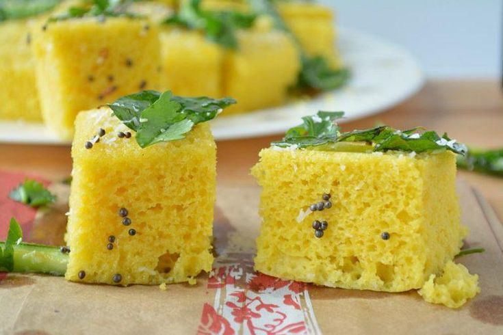

"Unveiling Flavors Through Time: The Epic Saga of Dhokla!"
Dhokla, a steamed, spongy cake, originated in the western Indian state of Gujarat. Its history can be traced back to over a thousand years when it was mentioned in ancient texts. Dhokla is traditionally made from fermented rice and chickpea flour batter, then steamed to perfection. This savory snack has evolved into various regional varieties and is now a popular dish enjoyed across India and internationally, known for its delightful texture and tangy flavors.
"Bringing Dhokla to your kitchen"
Dhokla is a popular Indian snack or side dish made from fermented rice and chickpea flour. It's known for its spongy texture and tangy flavor.
Here's a basic recipe for making dhokla:
Elevate Your Dish with Exceptional Ingredients
For the Dhokla Batter:
1. 1 cup gram flour (besan)
2. 1/4 cup rice flour
3. 1/4 cup yogurt (curd)
4. 1 teaspoon ginger-green chili paste
5. 1/2 teaspoon turmeric powder
6. Salt to taste
7. 1 teaspoon sugar
8. 1 teaspoon fruit salt (eno) or baking soda
9. 1 tablespoon lemon juice
For the Tempering:
1. 2 tablespoons oil
2. 1/2 teaspoon mustard seeds
3. 1/2 teaspoon cumin seeds
4. 8-10 curry leaves
5. 2-3 green chilies, slit
6. A pinch of asafoetida (hing)
7. 2 tablespoons water
8. 2 tablespoons chopped coriander leaves
9. 1 tablespoon grated coconut (optional)
Let's chop, simmer, and sauté our way to gastronomic glory!
Prepare the Dhokla Batter:
1. In a mixing bowl, combine gram flour, rice flour, yogurt, ginger-green chili paste, turmeric powder, salt, sugar, and lemon juice.
2. Gradually add water while stirring to make a smooth, lump-free batter. The batter should be thick yet pourable. Set it aside for 10-15 minutes.
3. Grease a dhokla plate or a shallow, round dish that fits inside your steamer or pressure cooker. If using a pressure cooker, remove the whistle.
4. In a separate bowl, mix the fruit salt (eno) or baking soda with 2 tablespoons of water. Add this to the batter and stir well. The batter will become frothy.
5. Immediately pour the batter into the greased plate.
Steam the Dhokla:
1. Place the plate inside a steamer or a pressure cooker without the whistle.
2. Steam the dhokla over medium-high heat for about 15-20 minutes or until a toothpick inserted in the center comes out clean.
Prepare the Tempering:
1. Heat oil in a small pan. Add mustard seeds and cumin seeds. Allow them to splutter.
2. Add curry leaves, green chilies, and asafoetida. Sauté for a minute.
3. Add 2 tablespoons of water to the tempering to create steam and immediately pour this tempering evenly over the steamed dhokla.
Serve the Dhokla:
1. Let the dhokla cool for a few minutes.
2. Cut it into desired shapes, like squares or diamonds.
3. Garnish with chopped coriander leaves and grated coconut, if desired.
4. Serve dhokla with green chutney or tamarind chutney.
Enjoy your homemade dhokla, a delightful and healthy Indian snack!